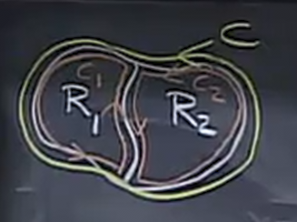
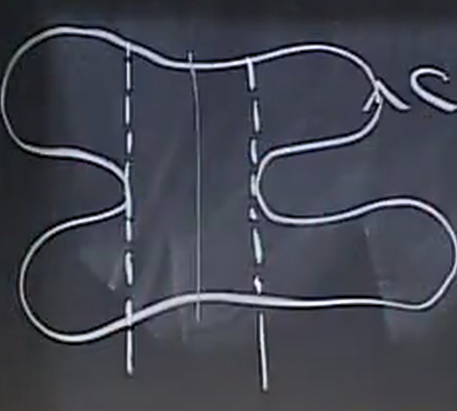
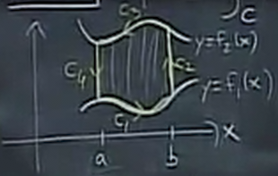

Green's Theorem
Table of Contents
We know that if a field is conservative, then it only depends on the endpoints and therefore the line integral of a closed conservative curve will be zero. However, for general curves, apart from calculating it directly, we can also use another method.
1. Green's Theorem
Green's Theorem states that if \(C\) is a closed curve enclosing a region \(R\), counterclockwise, and \(\vec{F}\) is a vector field defined and differentiable in \(R\), then:
\begin{align} \oint_C \vec{F} \cdot \text{d}\vec{r} = \iint_R \text{curl } \vec{F} \text{ d}A \end{align}In terms of vector components, this is:
\begin{align} \oint_C M\text{ d}x + N\text{ d}y = \iint_R (N_x-M_y)\text{ d}A \end{align}2. Proof
The first observation is that we can split this theorem up into two simpler identities, that once proved, the sum will give us Green's Theorem:
\begin{aligned} \oint_C M \text{ d}x = -\iint_R M_y\text{ d}A \\ \oint_C N \text{ d}y = \iint_R N_x\text{ d}A \end{aligned}Without loss of generality, we can prove one of these and it can be shown that by similar logic the other must be true.
The second observation is that we can split larger, more complicated regions, down into smaller, simpler regions:

If we can prove the theorem true for \(C_1\) and \(C_2\), then we can sum them to get \(C\). The extra path in the middle cancels out as \(C_1\) and \(C_2\) goes in opposite directions through the middle.
The implication is that we can cut any curve \(C\) into "vertically simple" pieces such that we can easily define bounds where \(a < x < b\) and \(f_1(x) < y < f_2(x)\):

This reduces what we need to prove down to: prove that \(\oint_C M \text{ d}x = -\iint_R M_y\text{ d}A\), if \(R\) is a vertically simple region and \(C\) is the curve bounding that region going counterclockwise:

First, realize that for \(C_2\) and \(C_4\), \(x\) is constant, which means \(\text{d}x\) is zero. Therefore, when adding the integrals, we can ignore \(C_2\) and \(C_4\).
Then with \(C_1\), we know that \(y=f_1(x)\), so we can express everything in terms of \(x\):
\[ \int_{C_1} M(x,y) \text{ d}x = \int_a^b M(x,f_1(x))\text{ d}x \]
Similarly with \(C_3\), we have:
\[ \int_{C_3} M(x,y) \text{ d}x = \int_b^a M(x,f_2(x))\text{ d}x = -\int_a^b M(x,f_2(x))\text{ d}x \]
Summing these pieces together, we get that:
\begin{align} \oint_C M\text{ d}x = \int_a^b M(x,f_1(x))\text{ d}x - \int_a^b M(x,f_2(x))\text{ d}x \end{align}Now, our job is to make the double integral equal to this. Our double integral over this region is:
\[ \iint_R -M_y \text{ d}A = -\int_a^b \int_{f_1(x)}^{f_2(x)} \frac{\partial M}{\partial y} \text{ d}y\text{ d}x \]
Computing the inner integral, we have:
\begin{align} \iint_R -M_y \text{ d}A = -\int_a^b M(x,f_2(x)) - M(x,f_1(x))\text{ d}x \end{align}Since (3) is equivalent to (4), we have proved Green's Theorem. \(\blacksquare\)